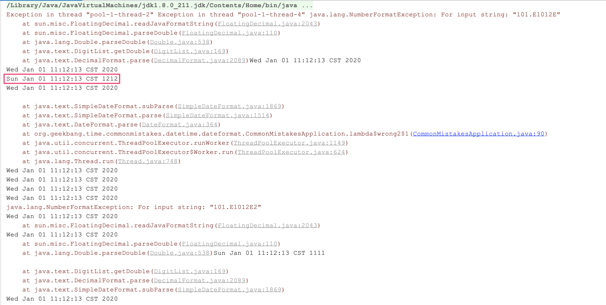
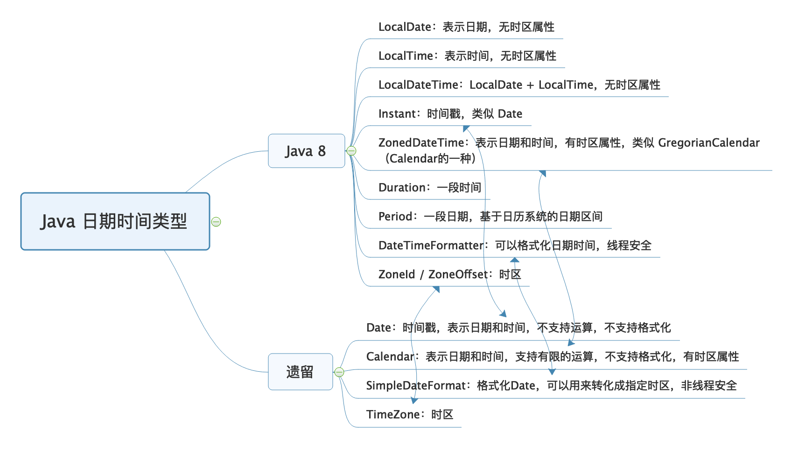

- 00 开篇词 业务代码真的会有这么多坑？.md.html
- 01 使用了并发工具类库，线程安全就高枕无忧了吗？.md.html
- 02 代码加锁：不要让“锁”事成为烦心事.md.html
- 03 线程池：业务代码最常用也最容易犯错的组件.md.html
- 04 连接池：别让连接池帮了倒忙.md.html
- 05 HTTP调用：你考虑到超时、重试、并发了吗？.md.html
- 06 2成的业务代码的Spring声明式事务，可能都没处理正确.md.html
- 07 数据库索引：索引并不是万能药.md.html
- 08 判等问题：程序里如何确定你就是你？.md.html
- 09 数值计算：注意精度、舍入和溢出问题.md.html
- 10 集合类：坑满地的List列表操作.md.html
- 11 空值处理：分不清楚的null和恼人的空指针.md.html
- 12 异常处理：别让自己在出问题的时候变为瞎子.md.html
- 13 日志：日志记录真没你想象的那么简单.md.html
- 14 文件IO：实现高效正确的文件读写并非易事.md.html
- 15 序列化：一来一回你还是原来的你吗？.md.html
- 16 用好Java 8的日期时间类，少踩一些“老三样”的坑.md.html
- 17 别以为“自动挡”就不可能出现OOM.md.html
- 18 当反射、注解和泛型遇到OOP时，会有哪些坑？.md.html
- 19 Spring框架：IoC和AOP是扩展的核心.md.html
- 20 Spring框架：框架帮我们做了很多工作也带来了复杂度.md.html
- 21 代码重复：搞定代码重复的三个绝招.md.html
- 22 接口设计：系统间对话的语言，一定要统一.md.html
- 23 缓存设计：缓存可以锦上添花也可以落井下石.md.html
- 24 业务代码写完，就意味着生产就绪了？.md.html
- 25 异步处理好用，但非常容易用错.md.html
- 26 数据存储：NoSQL与RDBMS如何取长补短、相辅相成？.md.html
- 27 数据源头：任何客户端的东西都不可信任.md.html
- 28 安全兜底：涉及钱时，必须考虑防刷、限量和防重.md.html
- 29 数据和代码：数据就是数据，代码就是代码.md.html
- 30 如何正确保存和传输敏感数据？.md.html
- 31 加餐1：带你吃透课程中Java 8的那些重要知识点（一）.md.html
- 32 加餐2：带你吃透课程中Java 8的那些重要知识点（二）.md.html
- 33 加餐3：定位应用问题，排错套路很重要.md.html
- 34 加餐4：分析定位Java问题，一定要用好这些工具（一）.md.html
- 35 加餐5：分析定位Java问题，一定要用好这些工具（二）.md.html
- 36 加餐6：这15年来，我是如何在工作中学习技术和英语的？.md.html
- 37 加餐7：程序员成长28计.md.html
- 38 加餐8：Java程序从虚拟机迁移到Kubernetes的一些坑.md.html
- 答疑篇：代码篇思考题集锦（一）.md.html
- 答疑篇：代码篇思考题集锦（三）.md.html
- 答疑篇：代码篇思考题集锦（二）.md.html
- 答疑篇：加餐篇思考题答案合集.md.html
- 答疑篇：安全篇思考题答案合集.md.html
- 答疑篇：设计篇思考题答案合集.md.html
- 结束语 写代码时，如何才能尽量避免踩坑？.md.html
16 用好Java 8的日期时间类，少踩一些“老三样”的坑
你好，我是朱晔。今天，我来和你说说恼人的时间错乱问题。
在 Java 8 之前，我们处理日期时间需求时，使用 Date、Calender 和 SimpleDateFormat，来声明时间戳、使用日历处理日期和格式化解析日期时间。但是，这些类的 API 的缺点比较明显，比如可读性差、易用性差、使用起来冗余繁琐，还有线程安全问题。
因此，Java 8 推出了新的日期时间类。每一个类功能明确清晰、类之间协作简单、API 定义清晰不踩坑，API 功能强大无需借助外部工具类即可完成操作，并且线程安全。
但是，Java 8 刚推出的时候，诸如序列化、数据访问等类库都还不支持 Java 8 的日期时间类型，需要在新老类中来回转换。比如，在业务逻辑层使用 LocalDateTime，存入数据库或者返回前端的时候还要切换回 Date。因此，很多同学还是选择使用老的日期时间类。
现在几年时间过去了，几乎所有的类库都支持了新日期时间类型，使用起来也不会有来回切换等问题了。但，很多代码中因为还是用的遗留的日期时间类，因此出现了很多时间错乱的错误实践。比如，试图通过随意修改时区，使读取到的数据匹配当前时钟；再比如，试图直接对读取到的数据做加、减几个小时的操作，来“修正数据”。
今天，我就重点与你分析下时间错乱问题背后的原因，看看使用遗留的日期时间类，来处理日期时间初始化、格式化、解析、计算等可能会遇到的问题，以及如何使用新日期时间类来解决。
初始化日期时间
我们先从日期时间的初始化看起。如果要初始化一个 2019 年 12 月 31 日 11 点 12 分 13 秒这样的时间，可以使用下面的两行代码吗？
Date date = new Date(2019, 12, 31, 11, 12, 13);
System.out.println(date);
可以看到，输出的时间是 3029 年 1 月 31 日 11 点 12 分 13 秒：
Sat Jan 31 11:12:13 CST 3920
相信看到这里，你会说这是新手才会犯的低级错误：年应该是和 1900 的差值，月应该是从 0 到 11 而不是从 1 到 12。
Date date = new Date(2019 - 1900, 11, 31, 11, 12, 13);
你说的没错，但更重要的问题是，当有国际化需求时，需要使用 Calendar 类来初始化时间。
使用 Calendar 改造之后，初始化时年参数直接使用当前年即可，不过月需要注意是从 0 到 11。当然，你也可以直接使用 Calendar.DECEMBER 来初始化月份，更不容易犯错。为了说明时区的问题，我分别使用当前时区和纽约时区初始化了两次相同的日期：
Calendar calendar = Calendar.getInstance();
calendar.set(2019, 11, 31, 11, 12, 13);
System.out.println(calendar.getTime());
Calendar calendar2 = Calendar.getInstance(TimeZone.getTimeZone("America/New_York"));
calendar2.set(2019, Calendar.DECEMBER, 31, 11, 12, 13);
System.out.println(calendar2.getTime());
输出显示了两个时间，说明时区产生了作用。但，我们更习惯年 / 月 / 日 时: 分: 秒这样的日期时间格式，对现在输出的日期格式还不满意：
Tue Dec 31 11:12:13 CST 2019
Wed Jan 01 00:12:13 CST 2020
那，时区的问题是怎么回事，又怎么格式化需要输出的日期时间呢？接下来，我就与你逐一分析下这两个问题。
“恼人”的时区问题
我们知道，全球有 24 个时区，同一个时刻不同时区（比如中国上海和美国纽约）的时间是不一样的。对于需要全球化的项目，如果初始化时间时没有提供时区，那就不是一个真正意义上的时间，只能认为是我看到的当前时间的一个表示。
关于 Date 类，我们要有两点认识：
一是，Date 并无时区问题，世界上任何一台计算机使用 new Date() 初始化得到的时间都一样。因为，Date 中保存的是 UTC 时间，UTC 是以原子钟为基础的统一时间，不以太阳参照计时，并无时区划分。
二是，Date 中保存的是一个时间戳，代表的是从 1970 年 1 月 1 日 0 点（Epoch 时间）到现在的毫秒数。尝试输出 Date(0)：
System.out.println(new Date(0));
System.out.println(TimeZone.getDefault().getID() + ":" + TimeZone.getDefault().getRawOffset()/3600000);
我得到的是 1970 年 1 月 1 日 8 点。因为我机器当前的时区是中国上海，相比 UTC 时差 +8 小时：
Thu Jan 01 08:00:00 CST 1970
Asia/Shanghai:8
对于国际化（世界各国的人都在使用）的项目，处理好时间和时区问题首先就是要正确保存日期时间。这里有两种保存方式：
方式一，以 UTC 保存，保存的时间没有时区属性，是不涉及时区时间差问题的世界统一时间。我们通常说的时间戳，或 Java 中的 Date 类就是用的这种方式，这也是推荐的方式。
方式二，以字面量保存，比如年 / 月 / 日 时: 分: 秒，一定要同时保存时区信息。只有有了时区信息，我们才能知道这个字面量时间真正的时间点，否则它只是一个给人看的时间表示，只在当前时区有意义。Calendar 是有时区概念的，所以我们通过不同的时区初始化 Calendar，得到了不同的时间。
正确保存日期时间之后，就是正确展示，即我们要使用正确的时区，把时间点展示为符合当前时区的时间表示。到这里，我们就能理解为什么会有所谓的“时间错乱”问题了。接下来，我再通过实际案例分析一下，从字面量解析成时间和从时间格式化为字面量这两类问题。
第一类是，对于同一个时间表示，比如 2020-01-02 22:00:00，不同时区的人转换成 Date 会得到不同的时间（时间戳）：
String stringDate = "2020-01-02 22:00:00";
SimpleDateFormat inputFormat = new SimpleDateFormat("yyyy-MM-dd HH:mm:ss");
//默认时区解析时间表示
Date date1 = inputFormat.parse(stringDate);
System.out.println(date1 + ":" + date1.getTime());
//纽约时区解析时间表示
inputFormat.setTimeZone(TimeZone.getTimeZone("America/New_York"));
Date date2 = inputFormat.parse(stringDate);
System.out.println(date2 + ":" + date2.getTime());
可以看到，把 2020-01-02 22:00:00 这样的时间表示，对于当前的上海时区和纽约时区，转化为 UTC 时间戳是不同的时间：
Thu Jan 02 22:00:00 CST 2020:1577973600000
Fri Jan 03 11:00:00 CST 2020:1578020400000
这正是 UTC 的意义，并不是时间错乱。对于同一个本地时间的表示，不同时区的人解析得到的 UTC 时间一定是不同的，反过来不同的本地时间可能对应同一个 UTC。
第二类问题是，格式化后出现的错乱，即同一个 Date，在不同的时区下格式化得到不同的时间表示。比如，在我的当前时区和纽约时区格式化 2020-01-02 22:00:00：
String stringDate = "2020-01-02 22:00:00";
SimpleDateFormat inputFormat = new SimpleDateFormat("yyyy-MM-dd HH:mm:ss");
//同一Date
Date date = inputFormat.parse(stringDate);
//默认时区格式化输出：
System.out.println(new SimpleDateFormat("[yyyy-MM-dd HH:mm:ss Z]").format(date));
//纽约时区格式化输出
TimeZone.setDefault(TimeZone.getTimeZone("America/New_York"));
System.out.println(new SimpleDateFormat("[yyyy-MM-dd HH:mm:ss Z]").format(date));
输出如下，我当前时区的 Offset（时差）是 +8 小时，对于 -5 小时的纽约，晚上 10 点对应早上 9 点：
[2020-01-02 22:00:00 +0800]
[2020-01-02 09:00:00 -0500]
因此，有些时候数据库中相同的时间，由于服务器的时区设置不同，读取到的时间表示不同。这，不是时间错乱，正是时区发挥了作用，因为 UTC 时间需要根据当前时区解析为正确的本地时间。
所以，要正确处理时区，在于存进去和读出来两方面：存的时候，需要使用正确的当前时区来保存，这样 UTC 时间才会正确；读的时候，也只有正确设置本地时区，才能把 UTC 时间转换为正确的当地时间。
Java 8 推出了新的时间日期类 ZoneId、ZoneOffset、LocalDateTime、ZonedDateTime 和 DateTimeFormatter，处理时区问题更简单清晰。我们再用这些类配合一个完整的例子，来理解一下时间的解析和展示：
首先初始化上海、纽约和东京三个时区。我们可以使用 ZoneId.of 来初始化一个标准的时区，也可以使用 ZoneOffset.ofHours 通过一个 offset，来初始化一个具有指定时间差的自定义时区。
对于日期时间表示，LocalDateTime 不带有时区属性，所以命名为本地时区的日期时间；而 ZonedDateTime=LocalDateTime+ZoneId，具有时区属性。因此，LocalDateTime 只能认为是一个时间表示，ZonedDateTime 才是一个有效的时间。在这里我们把 2020-01-02 22:00:00 这个时间表示，使用东京时区来解析得到一个 ZonedDateTime。
使用 DateTimeFormatter 格式化时间的时候，可以直接通过 withZone 方法直接设置格式化使用的时区。最后，分别以上海、纽约和东京三个时区来格式化这个时间输出：
//一个时间表示
String stringDate = "2020-01-02 22:00:00";
//初始化三个时区
ZoneId timeZoneSH = ZoneId.of("Asia/Shanghai");
ZoneId timeZoneNY = ZoneId.of("America/New_York");
ZoneId timeZoneJST = ZoneOffset.ofHours(9);
//格式化器
DateTimeFormatter dateTimeFormatter = DateTimeFormatter.ofPattern("yyyy-MM-dd HH:mm:ss");
ZonedDateTime date = ZonedDateTime.of(LocalDateTime.parse(stringDate, dateTimeFormatter), timeZoneJST);
//使用DateTimeFormatter格式化时间，可以通过withZone方法直接设置格式化使用的时区
DateTimeFormatter outputFormat = DateTimeFormatter.ofPattern("yyyy-MM-dd HH:mm:ss Z");
System.out.println(timeZoneSH.getId() + outputFormat.withZone(timeZoneSH).format(date));
System.out.println(timeZoneNY.getId() + outputFormat.withZone(timeZoneNY).format(date));
System.out.println(timeZoneJST.getId() + outputFormat.withZone(timeZoneJST).format(date));
可以看到，相同的时区，经过解析存进去和读出来的时间表示是一样的（比如最后一行）；而对于不同的时区，比如上海和纽约，最后输出的本地时间不同。+9 小时时区的晚上 10 点，对于上海是 +8 小时，所以上海本地时间是晚上 9 点；而对于纽约是 -5 小时，差 14 小时，所以是早上 8 点：
Asia/Shanghai2020-01-02 21:00:00 +0800
America/New_York2020-01-02 08:00:00 -0500
+09:002020-01-02 22:00:00 +0900
到这里，我来小结下。要正确处理国际化时间问题，我推荐使用 Java 8 的日期时间类，即使用 ZonedDateTime 保存时间，然后使用设置了 ZoneId 的 DateTimeFormatter 配合 ZonedDateTime 进行时间格式化得到本地时间表示。这样的划分十分清晰、细化，也不容易出错。
接下来，我们继续看看对于日期时间的格式化和解析，使用遗留的 SimpleDateFormat，会遇到哪些问题。
日期时间格式化和解析
每到年底，就有很多开发同学踩时间格式化的坑，比如“这明明是一个 2019 年的日期，怎么使用 SimpleDateFormat 格式化后就提前跨年了”。我们来重现一下这个问题。
初始化一个 Calendar，设置日期时间为 2019 年 12 月 29 日，使用大写的 YYYY 来初始化 SimpleDateFormat：
Locale.setDefault(Locale.SIMPLIFIED_CHINESE);
System.out.println("defaultLocale:" + Locale.getDefault());
Calendar calendar = Calendar.getInstance();
calendar.set(2019, Calendar.DECEMBER, 29,0,0,0);
SimpleDateFormat YYYY = new SimpleDateFormat("YYYY-MM-dd");
System.out.println("格式化: " + YYYY.format(calendar.getTime()));
System.out.println("weekYear:" + calendar.getWeekYear());
System.out.println("firstDayOfWeek:" + calendar.getFirstDayOfWeek());
System.out.println("minimalDaysInFirstWeek:" + calendar.getMinimalDaysInFirstWeek());
得到的输出却是 2020 年 12 月 29 日：
defaultLocale:zh_CN
格式化: 2020-12-29
weekYear:2020
firstDayOfWeek:1
minimalDaysInFirstWeek:1
出现这个问题的原因在于，这位同学混淆了 SimpleDateFormat 的各种格式化模式。JDK 的文档中有说明：小写 y 是年，而大写 Y 是 week year，也就是所在的周属于哪一年。
一年第一周的判断方式是，从 getFirstDayOfWeek() 开始，完整的 7 天，并且包含那一年至少 getMinimalDaysInFirstWeek() 天。这个计算方式和区域相关，对于当前 zh_CN 区域来说，2020 年第一周的条件是，从周日开始的完整 7 天，2020 年包含 1 天即可。显然，2019 年 12 月 29 日周日到 2020 年 1 月 4 日周六是 2020 年第一周，得出的 week year 就是 2020 年。
如果把区域改为法国：
Locale.setDefault(Locale.FRANCE);
那么 week yeay 就还是 2019 年，因为一周的第一天从周一开始算，2020 年的第一周是 2019 年 12 月 30 日周一开始，29 日还是属于去年：
defaultLocale:fr_FR
格式化: 2019-12-29
weekYear:2019
firstDayOfWeek:2
minimalDaysInFirstWeek:4
这个案例告诉我们，没有特殊需求，针对年份的日期格式化，应该一律使用 “y” 而非 “Y”。
除了格式化表达式容易踩坑外，SimpleDateFormat 还有两个著名的坑。
第一个坑是，定义的 static 的 SimpleDateFormat 可能会出现线程安全问题。比如像这样，使用一个 100 线程的线程池，循环 20 次把时间格式化任务提交到线程池处理，每个任务中又循环 10 次解析 2020-01-01 11:12:13 这样一个时间表示：
ExecutorService threadPool = Executors.newFixedThreadPool(100);
for (int i = 0; i < 20; i++) {
//提交20个并发解析时间的任务到线程池，模拟并发环境
threadPool.execute(() -> {
for (int j = 0; j < 10; j++) {
try {
System.out.println(simpleDateFormat.parse("2020-01-01 11:12:13"));
} catch (ParseException e) {
e.printStackTrace();
}
}
});
}
threadPool.shutdown();
threadPool.awaitTermination(1, TimeUnit.HOURS);
运行程序后大量报错，且没有报错的输出结果也不正常，比如 2020 年解析成了 1212 年：

SimpleDateFormat 的作用是定义解析和格式化日期时间的模式。这，看起来这是一次性的工作，应该复用，但它的解析和格式化操作是非线程安全的。我们来分析一下相关源码：
SimpleDateFormat 继承了 DateFormat，DateFormat 有一个字段 Calendar；
SimpleDateFormat 的 parse 方法调用 CalendarBuilder 的 establish 方法，来构建 Calendar；
establish 方法内部先清空 Calendar 再构建 Calendar，整个操作没有加锁。
显然，如果多线程池调用 parse 方法，也就意味着多线程在并发操作一个 Calendar，可能会产生一个线程还没来得及处理 Calendar 就被另一个线程清空了的情况：
public abstract class DateFormat extends Format {
protected Calendar calendar;
}
public class SimpleDateFormat extends DateFormat {
@Override
public Date parse(String text, ParsePosition pos)
{
CalendarBuilder calb = new CalendarBuilder();
parsedDate = calb.establish(calendar).getTime();
return parsedDate;
}
}
class CalendarBuilder {
Calendar establish(Calendar cal) {
...
cal.clear();//清空
for (int stamp = MINIMUM_USER_STAMP; stamp < nextStamp; stamp++) {
for (int index = 0; index <= maxFieldIndex; index++) {
if (field[index] == stamp) {
cal.set(index, field[MAX_FIELD + index]);//构建
break;
}
}
}
return cal;
}
}
format 方法也类似，你可以自己分析。因此只能在同一个线程复用 SimpleDateFormat，比较好的解决方式是，通过 ThreadLocal 来存放 SimpleDateFormat：
private static ThreadLocal<SimpleDateFormat> threadSafeSimpleDateFormat = ThreadLocal.withInitial(() -> new SimpleDateFormat("yyyy-MM-dd HH:mm:ss"));
第二个坑是，当需要解析的字符串和格式不匹配的时候，SimpleDateFormat 表现得很宽容，还是能得到结果。比如，我们期望使用 yyyyMM 来解析 20160901 字符串：
String dateString = "20160901";
SimpleDateFormat dateFormat = new SimpleDateFormat("yyyyMM");
System.out.println("result:" + dateFormat.parse(dateString));
居然输出了 2091 年 1 月 1 日，原因是把 0901 当成了月份，相当于 75 年：
result:Mon Jan 01 00:00:00 CST 2091
对于 SimpleDateFormat 的这三个坑，我们使用 Java 8 中的 DateTimeFormatter 就可以避过去。首先，使用 DateTimeFormatterBuilder 来定义格式化字符串，不用去记忆使用大写的 Y 还是小写的 Y，大写的 M 还是小写的 m：
private static DateTimeFormatter dateTimeFormatter = new DateTimeFormatterBuilder()
.appendValue(ChronoField.YEAR) //年
.appendLiteral("/")
.appendValue(ChronoField.MONTH_OF_YEAR) //月
.appendLiteral("/")
.appendValue(ChronoField.DAY_OF_MONTH) //日
.appendLiteral(" ")
.appendValue(ChronoField.HOUR_OF_DAY) //时
.appendLiteral(":")
.appendValue(ChronoField.MINUTE_OF_HOUR) //分
.appendLiteral(":")
.appendValue(ChronoField.SECOND_OF_MINUTE) //秒
.appendLiteral(".")
.appendValue(ChronoField.MILLI_OF_SECOND) //毫秒
.toFormatter();
其次，DateTimeFormatter 是线程安全的，可以定义为 static 使用；最后，DateTimeFormatter 的解析比较严格，需要解析的字符串和格式不匹配时，会直接报错，而不会把 0901 解析为月份。我们测试一下：
//使用刚才定义的DateTimeFormatterBuilder构建的DateTimeFormatter来解析这个时间
LocalDateTime localDateTime = LocalDateTime.parse("2020/1/2 12:34:56.789", dateTimeFormatter);
//解析成功
System.out.println(localDateTime.format(dateTimeFormatter));
//使用yyyyMM格式解析20160901是否可以成功呢？
String dt = "20160901";
DateTimeFormatter dateTimeFormatter = DateTimeFormatter.ofPattern("yyyyMM");
System.out.println("result:" + dateTimeFormatter.parse(dt));
输出日志如下：
2020/1/2 12:34:56.789
Exception in thread "main" java.time.format.DateTimeParseException: Text '20160901' could not be parsed at index 0
at java.time.format.DateTimeFormatter.parseResolved0(DateTimeFormatter.java:1949)
at java.time.format.DateTimeFormatter.parse(DateTimeFormatter.java:1777)
at org.geekbang.time.commonmistakes.datetime.dateformat.CommonMistakesApplication.better(CommonMistakesApplication.java:80)
at org.geekbang.time.commonmistakes.datetime.dateformat.CommonMistakesApplication.main(CommonMistakesApplication.java:41)
到这里我们可以发现，使用 Java 8 中的 DateTimeFormatter 进行日期时间的格式化和解析，显然更让人放心。那么，对于日期时间的运算，使用 Java 8 中的日期时间类会不会更简单呢？
日期时间的计算
关于日期时间的计算，我先和你说一个常踩的坑。有些同学喜欢直接使用时间戳进行时间计算，比如希望得到当前时间之后 30 天的时间，会这么写代码：直接把 new Date().getTime 方法得到的时间戳加 30 天对应的毫秒数，也就是 30 天 *1000 毫秒 *3600 秒 *24 小时：
Date today = new Date();
Date nextMonth = new Date(today.getTime() + 30 * 1000 * 60 * 60 * 24);
System.out.println(today);
System.out.println(nextMonth);
得到的日期居然比当前日期还要早，根本不是晚 30 天的时间：
Sat Feb 01 14:17:41 CST 2020
Sun Jan 12 21:14:54 CST 2020
出现这个问题，其实是因为 int 发生了溢出。修复方式就是把 30 改为 30L，让其成为一个 long：
Date today = new Date();
Date nextMonth = new Date(today.getTime() + 30L * 1000 * 60 * 60 * 24);
System.out.println(today);
System.out.println(nextMonth);
这样就可以得到正确结果了：
Sat Feb 01 14:17:41 CST 2020
Mon Mar 02 14:17:41 CST 2020
不难发现，手动在时间戳上进行计算操作的方式非常容易出错。对于 Java 8 之前的代码，我更建议使用 Calendar：
Calendar c = Calendar.getInstance();
c.setTime(new Date());
c.add(Calendar.DAY_OF_MONTH, 30);
System.out.println(c.getTime());
使用 Java 8 的日期时间类型，可以直接进行各种计算，更加简洁和方便：
LocalDateTime localDateTime = LocalDateTime.now();
System.out.println(localDateTime.plusDays(30));
并且，对日期时间做计算操作，Java 8 日期时间 API 会比 Calendar 功能强大很多。
第一，可以使用各种 minus 和 plus 方法直接对日期进行加减操作，比如如下代码实现了减一天和加一天，以及减一个月和加一个月：
System.out.println("//测试操作日期");
System.out.println(LocalDate.now()
.minus(Period.ofDays(1))
.plus(1, ChronoUnit.DAYS)
.minusMonths(1)
.plus(Period.ofMonths(1)));
可以得到：
//测试操作日期
2020-02-01
第二，还可以通过 with 方法进行快捷时间调节，比如：
使用 TemporalAdjusters.firstDayOfMonth 得到当前月的第一天；
使用 TemporalAdjusters.firstDayOfYear() 得到当前年的第一天；
使用 TemporalAdjusters.previous(DayOfWeek.SATURDAY) 得到上一个周六；
使用 TemporalAdjusters.lastInMonth(DayOfWeek.FRIDAY) 得到本月最后一个周五。
System.out.println("//本月的第一天");
System.out.println(LocalDate.now().with(TemporalAdjusters.firstDayOfMonth()));
System.out.println("//今年的程序员日");
System.out.println(LocalDate.now().with(TemporalAdjusters.firstDayOfYear()).plusDays(255));
System.out.println("//今天之前的一个周六");
System.out.println(LocalDate.now().with(TemporalAdjusters.previous(DayOfWeek.SATURDAY)));
System.out.println("//本月最后一个工作日");
System.out.println(LocalDate.now().with(TemporalAdjusters.lastInMonth(DayOfWeek.FRIDAY)));
输出如下：
//本月的第一天
2020-02-01
//今年的程序员日
2020-09-12
//今天之前的一个周六
2020-01-25
//本月最后一个工作日
2020-02-28
第三，可以直接使用 lambda 表达式进行自定义的时间调整。比如，为当前时间增加 100 天以内的随机天数：
System.out.println(LocalDate.now().with(temporal -> temporal.plus(ThreadLocalRandom.current().nextInt(100), ChronoUnit.DAYS)));
得到：
2020-03-15
除了计算外，还可以判断日期是否符合某个条件。比如，自定义函数，判断指定日期是否是家庭成员的生日：
public static Boolean isFamilyBirthday(TemporalAccessor date) {
int month = date.get(MONTH_OF_YEAR);
int day = date.get(DAY_OF_MONTH);
if (month == Month.FEBRUARY.getValue() && day == 17)
return Boolean.TRUE;
if (month == Month.SEPTEMBER.getValue() && day == 21)
return Boolean.TRUE;
if (month == Month.MAY.getValue() && day == 22)
return Boolean.TRUE;
return Boolean.FALSE;
}
然后，使用 query 方法查询是否匹配条件：
System.out.println("//查询是否是今天要举办生日");
System.out.println(LocalDate.now().query(CommonMistakesApplication::isFamilyBirthday));
使用 Java 8 操作和计算日期时间虽然方便，但计算两个日期差时可能会踩坑：Java 8 中有一个专门的类 Period 定义了日期间隔，通过 Period.between 得到了两个 LocalDate 的差，返回的是两个日期差几年零几月零几天。如果希望得知两个日期之间差几天，直接调用 Period 的 getDays() 方法得到的只是最后的“零几天”，而不是算总的间隔天数。
比如，计算 2019 年 12 月 12 日和 2019 年 10 月 1 日的日期间隔，很明显日期差是 2 个月零 11 天，但获取 getDays 方法得到的结果只是 11 天，而不是 72 天：
System.out.println("//计算日期差");
LocalDate today = LocalDate.of(2019, 12, 12);
LocalDate specifyDate = LocalDate.of(2019, 10, 1);
System.out.println(Period.between(specifyDate, today).getDays());
System.out.println(Period.between(specifyDate, today));
System.out.println(ChronoUnit.DAYS.between(specifyDate, today));
可以使用 ChronoUnit.DAYS.between 解决这个问题：
//计算日期差
11
P2M11D
72
从日期时间的时区到格式化再到计算，你是不是体会到 Java 8 日期时间类的强大了呢？
重点回顾
今天，我和你一起看了日期时间的初始化、时区、格式化、解析和计算的问题。我们看到，使用 Java 8 中的日期时间包 Java.time 的类进行各种操作，会比使用遗留的 Date、Calender 和 SimpleDateFormat 更简单、清晰，功能也更丰富、坑也比较少。
如果有条件的话，我还是建议全面改为使用 Java 8 的日期时间类型。我把 Java 8 前后的日期时间类型，汇总到了一张思维导图上，图中箭头代表的是新老类型在概念上等价的类型：

这里有个误区是，认为 java.util.Date 类似于新 API 中的 LocalDateTime。其实不是，虽然它们都没有时区概念，但 java.util.Date 类是因为使用 UTC 表示，所以没有时区概念，其本质是时间戳；而 LocalDateTime，严格上可以认为是一个日期时间的表示，而不是一个时间点。
因此，在把 Date 转换为 LocalDateTime 的时候，需要通过 Date 的 toInstant 方法得到一个 UTC 时间戳进行转换，并需要提供当前的时区，这样才能把 UTC 时间转换为本地日期时间（的表示）。反过来，把 LocalDateTime 的时间表示转换为 Date 时，也需要提供时区，用于指定是哪个时区的时间表示，也就是先通过 atZone 方法把 LocalDateTime 转换为 ZonedDateTime，然后才能获得 UTC 时间戳：
Date in = new Date();
LocalDateTime ldt = LocalDateTime.ofInstant(in.toInstant(), ZoneId.systemDefault());
Date out = Date.from(ldt.atZone(ZoneId.systemDefault()).toInstant());
很多同学说使用新 API 很麻烦，还需要考虑时区的概念，一点都不简洁。但我通过这篇文章要和你说的是，并不是因为 API 需要设计得这么繁琐，而是 UTC 时间要变为当地时间，必须考虑时区。
今天用到的代码，我都放在了 GitHub 上，你可以点击这个链接查看。
思考与讨论
我今天多次强调 Date 是一个时间戳，是 UTC 时间、没有时区概念，为什么调用其 toString 方法会输出类似 CST 之类的时区字样呢？
日期时间数据始终要保存到数据库中，MySQL 中有两种数据类型 datetime 和 timestamp 可以用来保存日期时间。你能说说它们的区别吗，它们是否包含时区信息呢？
对于日期和时间，你还遇到过什么坑吗？我是朱晔，欢迎在评论区与我留言分享你的想法，也欢迎你把今天的内容分享给你的朋友或同事，一起交流。